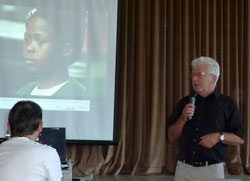
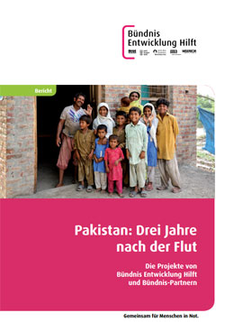
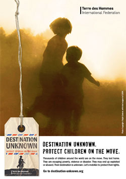
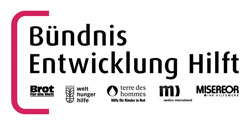

Es sei ihm schleierhaft, wie man in so wenigen Tagen so viel Geld einbringen könne, zeigte sich Schulleiter Roland Reiner tief beeindruckt von dem Ergebnis der diesjährigen Sammelaktion vom 7. bis 21. Juni der Schüler seines Markgraf-Ludwig-Gymnasiums (MLG). Das Schulfest am Montagnachmittag bildete den wirkungsvollen Rahmen für die Übergabe der Schecks an drei Institutionen, die de mokratisch ermittelt worden waren.
Bereits zum neunten Mal in Folge hätte sich die Schulgemeinschaft aufgemacht, um im Familien- und Freundeskreis, aber auch in der Fußgängerzo ne um Unterstützung für drei soziale Projekte zu bitten, aller dings in diesem Jahr nicht mehr unter dem Begriff „Sponsorenlauf". Annika Seitz und Laura Apostolika aus der Klas se 7a siegten mit dem Slogan „Hinschauen - Sammeln - Helfen" für die Spendenaktion und wurden für ihre gute Idee mit Freikarten für den Euro pa-Park belohnt.
13 366 Euro kamen zusammen, die in drei Tranchen aufgeteilt wurden, jeweils 6 014.70 Euro gingen an das Frauen- und Kinderschutzhaus und an „Terre des Hommes" für ein konkretes Projekt gegen Kinderarbeit in Nicaragua. 1 336,60 Euro ist der Anteil, der alljährlich dem hausinternen Südindienprojekt „Helfen macht Schule" vorbe halten ist.
Wolfgang Jung, Pädagoge am MLG und Initiator und Vor stand des Vereins, ist der Ver bindungsmann, der Informati onen über Erfolge von Klein projekten vor Ort verfolgt und an die Schule weitergibt. Auch Heinz Wolf steuerte Neuigkei ten über das „Terre-des- Hommes"-Projekt in Nicara gua bei, das in der Landwirt schaft schuftenden Kindern ei ne Schulbildung vermittelt, Margit Mutz und Katrin Gilg vom Frauenhaus hatten wie die anderen Empfänger bereits in einer Veranstaltung am 6. Juni von ihrer Arbeit für Mütter und Kinder berichtet, die wegen der Bedrohung durch häusliche Gewalt ins Frauenschutzhaus flüchteten.
Doch nicht nur die drei Institutionen erhielten "Geschenke". Die erfolgreichsten Sammler, die Klassen 5a und 5b sowie die Klasse 6c, erhielten Einkaufsgutscheine und freien Eintritt in den Europapark von anonymen Gönnern. Der Dank des Direktors ging allerdings nicht anonyme Personen. Eine besondere Würdigung erhielten Mirjam Watta, die Schülersprecherin der Schülermitverwaltung, und Kollegin Petra Kübler, bei der alle Fäden zusammenliefen.
Freitag, 26. Juli 2013
Baden-Baden unterstützt arbeitende Kinder in Nicaragua
Aktion von MLG-Schülern erbringt 6.014,70 Euro für Öko-Projekt von terre des hommes
Angefangen hat die großartige Aktion mit einer Anfrage von Petra Kübler vom Förderverein des Markgraf-Ludwig-Gymnasiums (MLG) aus Baden-Baden. Heinz Wolf von der Arbeitsgruppe terre des hommes Murgtal/Mittelbaden sagte spontan seine Teilnahme zu. Am 6. Juni informierte er, neben den andren Referenten, knapp 500 Schüler über das Projekt in Nicaragua.
Am 19. Juni organisierte Heinz Wolf eine Banner-Malaktion mit Studienrätin Johanna Gleußner und ihrer Klasse 6c. Sechs wunderschöne Banner zum Thema „ökologische Kinderrechte“ waren das Ergebnis. Diese Banner wurden neben Plakaten von terre des hommes und dem Nicaragua-Projekt in Treppenhaus und oberen Flur des MLG während des Schulfestes aufgehängt.
Die Banner sollen darüber hinaus zu Beginn des neuen Jahres in Baden-Badener Geschäften präsentiert werden. Auch werden sie einen Teil der Banner-Ausstellung von terre des hommes Deutschland bilden, die im Zusammenhang zum 25-jährigen Bestehen der Kinderrechtskonvention für Furore sorgen soll.
Am 22. Juli konnte Wolf dann anlässlich des Schulfestes des MLG den stolzen Betrag von 6.014,70 Euro, speziell für das Ökoprojekt im Norden Nicaraguas, entgegennehmen.
Eine Antwort auf die Krise – Das Projekt INPRUH in Nicaragua
Die internationale Finanzkrise hat ihren Ursprung in den westlichen Industriestaaten. Die Folgen sind weltweit spürbar: Millionen von Menschen sind in ihrer Existenz von einer Krise bedroht, an deren Entstehung sie keine Schuld haben. Am schlimmsten trifft es die Kinder: Bis zu 44 Millionen Kinder zusätzlich werden an Unterernährung leiden, mit allen negativen Auswirkungen auf ihre Gesundheit. Viele Eltern können bereits jetzt ihre Kinder nicht mehr zur Schule schicken. Bücher und Lehrmaterial sind zu teuer und die Mitarbeit de Kinder wird benötigt, um die Existenz der Familien zu sichern. Für Banken und Großunternehmen wurde ein Schutzschirm gespannt, denn sie gelten als »systemrelevant«. Doch was für Unternehmen gilt, gilt erst recht für Kinder, denn sie sind unsere Zukunft. Fürsorge und nachhaltige Hilfe finden Kinder unter dem Schutzschirm von terre des hommes.
Im Norden Nicaraguas spüren die Menschen die Auswirkungen der Krise. In den letzten Jahren bauten viele Kleinbauern auf ihren Parzellen Erdbeeren an die sich auf den lokalen Märkten gut verkaufen ließen. Doch der Markt für Erdbeeren ist völlig eingebrochen, da viele Menschen sie sich nicht mehr leisten können. Eine Dürre in der Region sorgte überdies dafür, dass die bewässerungsintensiven Erdbeeren nicht mehr profitabel angebaut werden konnten.
Außerdem fehlen den Familien in Nicaragua die wertvollen »Remesas«, die Überweisungen von Angehörigen, die in den USA oder Costa Rica arbeiten. Die Krise hat den Arbeitsmarkt auch in diesen Ländern voll getroffen. Zahl reichen Bauern in Nicaragua drohte der Ruin.
Dank der von terre des hommes unterstützten Organisation INPRUH konnte die Bauern auf einen ökologisch-nachhaltigen Anbau umstellen. Schon seit Jahren bildet INPRUH Jugendliche zu Öko-Agrartechnikern aus. Nebenher machen die Mädchen und Jungen noch einen Schulabschluss. Ihr Wissen konnte rasch in den Familien umgesetzt werden: Die Bauern pflanzen nun Mais, Bohnen und Tomaten an. Die meisten haben so schnell wie möglich umgestellt und können inzwischen die Ernährung der Familie sicherstellen.
Um die Familien nachhaltig zu unterstützen, wird eine Bank für Saatgut ein gerichtet. Wer Saatgut erhält, muss später wieder welches einbringen, so dass die ganze Gemeinde davon profitiert. Bald werden die Menschen wieder in der Lage sein, einen Überschuss zu produzieren, den sie verkaufen können.
Um von dem Verkauf leben zu können, werden direkte Vertriebswege zu den Großmärkten aufgebaut. Es ist das Ziel der Organisatoren, die Zwischenhändler zu umgehen, die den Bauern sehr wenig zahlen und große Gewinne einstreichen.
Die Verantwortlichen zeigen den Jugendlichen, wie sie Kooperativen bilden und ihre Produkt selbst an den Mann bringen können.
Hier haben die Menschen eine Antwort auf die Krise gefunden.
Im Projekt sind drei Nichtregierungsorga nisationen beteiligt, das aber unter Federführung des Vereins für Bildung und Kommunikation La Cuculmeca durchgeführt wird, der auch die Verantwortung für Umsetzung, Koordination und Mittel Verwaltung trägt. Die anderen beiden NRO sind das Institut für menschliche Entwicklung Inprhu-Somoto und der Verein Club Infantil Tuktan Sirpi.
Im Verlauf ihrer langjährigen Entwicklungsarbeit im Norden Nicaraguas haben die beteiligten Nichtregierungsorganisationen als ein Grundproblem für eine gesunde Entwicklung ihrer Zielgruppen das mangelnde Umweltbewusstsein und das Fehlen der Durchsetzung von staatlich festgelegten Umweltstandards erkannt.
Um einander ergänzende Stärken der Entwicklungsarbeit zu nutzen und mehr Effekt und Wirkung bei der Armuts bekämpfung zu erzielen, haben die drei Organisationen ein Bündnis geschlossen mit der gemeinsamen Vision, dass Kinder und Jugendliche aus 18 Gemeinden in zwei Landkreisen im Norden Nicaraguas heute und in Zukunft in einer gesunden, integrale Entwicklung ermöglichenden Umgebung leben, aufwachsen und sich erholen können.
Anknüpfend an ihre langjährige Projekterfahrung mit ländlich orientierten Bevölkerungsgruppen haben sie ein Projekt entworfen, um in möglichst breitem Rahmen die Rechte von Kindern und Jugendlichen zu schützen. Dabei werden Kinder und Jugendliche Vordenker und Vorreiter bei der Verteidigung ihrer Rechte und beim Aufbau neuer, harmonischer Beziehungen untereinander und in ihrem Umfeld sein.
Pakistan: Drei Jahre nach der Jahrhundertflut
Bündnis Entwicklung Hilft warnt vor weiteren Katastrophen
Drei Jahre nach den verheerenden Überschwemmungen in Pakistan behält Bündnis Entwicklung Hilft das Land weiterhin kritisch im Blick. »Die Anstrengungen beim Wiederaufbau zeigen zwar deutlich Ergebnisse«, erklärt Peter Mucke, Geschäftsführer des Bündnisses. »Aber wir dürfen uns nicht in Sicherheit wiegen. Pakistan bleibt weiterhin sehr verwundbar.«
Acht Hilfswerke finanzieren Fluthilfe-Projekte in Pakistan ganz oder teilweise mit Mitteln des Bündnis Entwicklung Hilft: Die Bündnis-Mitglieder Brot für die Welt, Christoffel-Blindenmission, Kindernothilfe, medico international, Misereor, terre des hommes und Welthungerhilfe sowie der Bündnis-Partner DAHW Deutsche Lepra- und Tuberkulosehilfe. Peter Mucke betont: »Dank des Einsatzwillens der Bevölkerung und der Unterstützung durch unsere Partnerorganisationen vor Ort konnten zum Beispiel in den ländlichen Gebieten in den Provinzen Sindh und Punjab tausende Häuser wiederaufgebaut werden. Die Menschen erhielten außerdem Unterstützung, um die Landwirtschaft nach den Überschwemmungen wieder anzukurbeln. Eine drohende Hungersnot konnte abgewendet werden.«
Was Pakistan verwundbar macht und damit das Katastrophenrisiko erhöht, ist insbesondere der Mangel an Kapazitäten für die Bewältigung der Katastrophe. Zum Vergleich: Im WeltRisikoIndex 2012 von Bündnis Entwicklung Hilft liegt Pakistan in der Kategorie Vulnerabilität (Verwundbarkeit) auf Platz 35 von insgesamt 173 Plätzen, Deutschland dagegen liegt auf Platz 168. Die geringe Verwundbarkeit ist einer der Gründe, warum Deutschland insgesamt ein niedriges Katastrophenrisiko hat. Was das konkret bedeutet, lässt sich anhand der Überschwemmungen vor wenigen Wochen aufzeigen: Das extreme Naturereignis forderte in Deutschland acht Todesopfer, ein guter Teil der Schäden ist durch Versicherungen abgedeckt, und die Menschen erfahren wirksame Hilfe vom Staat. Ein vulnerables Land wie Pakistan wäre dagegen von solch einer Flut um Jahre in seiner Entwicklung zurückgeworfen worden. So forderten die Überschwemmungen 2010 mehr als 1.700 Todesopfer, 20 Millionen Menschen waren betroffen, 14 Millionen auf humanitäre Hilfe angewiesen. Auch 2011 und 2012 kam es in einigen Teilen des Landes erneut zu schweren Überschwemmungen mit Hunderten von Toten.
Ein wesentlicher Ansatzpunkt, um die Verwundbarkeit Pakistans und seiner Bevölkerung zu senken, ist der Aufbau eines wirksamen Katastrophenschutzes. Bei allen acht Organisationen, die Hilfsgelder von Bündnis Entwicklung Hilft für ihre Arbeit in Pakistan erhalten haben, sind deshalb Maßnahmen der Katastrophenvorsorge wichtiger Teil der Wiederaufbau-Programme. Peter Mucke stellt jedoch klar: »Hilfsorganisationen können nur unterstützend wirken. Die Entscheidungen – etwa für den notwendigen Bau von Dämmen und für Wiederaufforstungsmaßnahmen zum Katastrophenschutz – müssen auf politischer Ebene fallen. Wir können in unserer langfristigen Entwicklungsarbeit jedoch die Menschen darin bestärken, sich an entsprechender Stelle Gehör zu verschaffen und so eine Entwicklung in Gang zu setzen.«
Brot für die Welt, Christoffel-Blindenmission, Kindernothilfe, medico international, Misereor, terre des hommes und Welthungerhilfe leisten als Bündnis Entwicklung Hilft akute und langfristige Hilfe bei Katastrophen und in Krisengebieten.
Ihre Spende - Stichwort: "Flut Pakistan"
Spendenkonto 51 51
Bank für Sozialwirtschaft
BLZ 370 205 00
Foto: terre des hommes Kinderhilfe Lausanne, Blaise Kormann
Laut UNICEF sind mehr als drei Millionen syrische Kinder vom bewaffneten Konflikt betroffen – Kinder mit einer ungewissen Zukunft. Allen voran die Zivilbevölkerung leidet unter der Gewalt, die in Syrien seit über zwei Jahren beinahe 93 000 Menschen das Leben gekostet und mehr als 4 250 000 in die Flucht getrieben hat. Syriens Nachbarland Jordanien hält die Grenzen weiterhin offen für von den Kampfhandlungen und Bombenangriffen fliehende Familien, die oft alles verloren haben, auch Angehörige. Insgesamt sind inzwischen mehr als 500 000 Syrer in Jordanien beim Flüchtlingshochkommissariat (UNHCR) registriert oder auf dem Weg dazu. Mehr als die Hälfte sind Kinder.
Terre des hommes (Tdh) ist bereits seit mehreren Jahren in Jordanien tätig und arbeitet für syrische Kinder und ihre Familien in den Gastgemeinschaften im Norden des Landes. In Partnerschaft mit UNICEF stellt Tdh im Flüchtlingslager Emirates Jordan Camp (EJC), nahe der Stadt Zarqa, auch psychosoziale Aktivitäten und Schutzmassnahmen sicher.
Kinder als Zeugen von Gräueltaten
Ahmed, 41 Jahre, musste zusehen, wie sein Schneideratelier und Kleidergeschäft in Dar’a von einer Rakete zerstört wurde, und mit seiner Frau und seinen vier Töchtern aus Syrien fliehen. Yasser, 48 Jahre, hat seine Arbeit als Immobilienmakler aufgegeben, die es ihm nicht mehr ermöglichte, für den Lebensunterhalt seiner Familie aufzukommen. Safwan, 40 Jahre, musste sein kleines Restaurant in Homs verlassen und in Begleitung seiner Frau und seiner vier Kinder nach Jordanien fliehen.
Unter den syrischen Flüchtlingen wurden Tausende von Kindern Opfer oder Zeuge schlimmster Kriegsszenen. Safwans Sohn Ziyad, 12 Jahre, erlitt bei einem Raketenangriff durch Splitter Verletzungen an einem Bein. Einen Monat lang haben er und seine Familie sich versteckt und sind am Boden kriechend vor Heckenschützen geflohen. Der Junge leidet unter den Folgen seiner Verletzung und der traumatischen Erfahrung des Krieges und Exils.
Enas Sleem ist Animateurin im Flüchtlingslager EJC, wo sich das Zentrum «Freund der Kinder» von Tdh befindet. Sie erinnert sich an die Ankunft eines Mädchens im Lager, das Zeugin des Todes seiner Eltern geworden war: «Das Mädchen isolierte sich, war total niedergeschlagen und weinte unaufhörlich.» «Die Flüchtlingskinder sind nervös, ängstlich und oft verstört, wenn sie im Lager ankommen», erzählt ein anderer Animateur von Tdh.
Widerstandskraft aufbauen
Die Flüchtlingskinder haben in Syrien sehr oft während Monaten keinen Zugang zur Schule. Ganz abgesehen vom Rest haben sie damit einen für ihre Entwicklung wichtigen sozialen Rahmen verloren. Um wieder etwas Normalität in ihr Leben zu bringen, entwickelt Tdh psychosoziale Aktivitäten im Flüchtlingslager EJC, das vom Roten Halbmond der Vereinigten Emirate und der jordanischen Regierung gemeinsam aufgebaut wurde.
Mehr als 800 Kinder sind bei Tdh für psychosoziale Aktivitäten angemeldet und die Animateure empfangen täglich 300 Kinder in sogenannten kinderfreundlichen Räumen. Die Kinder kommen zusammen, nehmen gemeinsam an strukturierten Freizeitaktivitäten teil und fassen ihre Gefühle und Ängste allmählich in Worte. Ziel ist es, das psychosoziale Wohlergehen dieser Kinder zu verbessern, indem man ihnen einen Rahmen bereitstellt, der es ihnen erlaubt, das Erlebte zu verstehen, wieder Vertrauen in sich selbst und andere zu gewinnen und erneut an die Zukunft zu denken.
Die psychosozialen Aktivitäten von Tdh wirken sich günstig auf die Kinder aus. Einige finden erneut zu etwas Fröhlichkeit und einem ruhigeren Schlaf zurück, andere lernen, wieder Vertrauen zu haben. Enas Sleem erzählt, dass «das Mädchen jetzt aktiv an den Stunden teilnimmt». In Kontakt mit den Tdh-Animateuren und seinen Kameraden kann Ziyad manchmal auch wieder lächeln. «Es wird Zeit brauchen, aber er wird sich wiederaufbauen», versichert Hassan Khawaldeh, Supervisor der Aktivitäten. Tdh arbeitet auch in Gruppen mit den Eltern und der Flüchtlingsgemeinschaft, damit sie auf die Schutzbedürfnisse ihrer Kinder eingehen und sich an der Stärkung von deren Widerstandskraft beteiligen.
Tdh möchte dem Fotoreporter Blaise Kormann für seine ergreifende Reportage danken. Wie die Familien, die bereit waren, ihren Lebensweg zu erzählen, gibt es Tausende andere Opfer des Konflikts, die unter inakzeptablen Bedingungen leben. Die internationale Mobilisierung zu ihren Gunsten muss sich fortsetzen und verstärken.
Keine Abschiebung von Flüchtlingen nach Libyen
100 neue somalische Flüchtlinge in Malta
Das internationale Kinderhilfswerk terre des hommes fordert, dass die gestern Morgen auf Malta angekommenen rund 100 somalischen Flüchtlinge nicht nach Libyen abgeschoben werden. Gemeinsam mit zehn weiteren europäischen Hilfsorganisationen appelliert die maltesische terre des hommes-Partnerorganisation KOPIN an die Behörden, die Flüchtlinge, darunter 41 Frauen und zwei Babys, menschlich zu behandeln und sie nicht der Gefahr von Folter und Arrest in Libyen auszusetzen. »Die Menschen haben auf ihrer Flucht aus Somalia Leib und Leben riskiert und stehen vor dem Nichts. Sie brauchen Schutz und Fürsorge«, erklärte Barbara Küppers, Kinderrechtsexpertin von terre des hommes. »Sie dürfen auf keinen Fall nach Libyen abgeschoben werden, wo ihnen internationalen Berichten zufolge Arrest, Misshandlungen und Erschießungen drohen. Die Behörden der EU haben jetzt die Chance zu zeigen, dass die gerade gestern von Papst Franziskus auf Lampedusa geforderte Solidarität mit den Schwachen für sie eine Verpflichtung ist.«
Das internationale terre des hommes-Netzwerk hat in Genf Kontakt mit dem UN-Berichterstatter für die Rechte von Migranten aufgenommen und setzt sich bei der EU-Kommission in Brüssel für die Flüchtlinge ein. Die Organisation KOPIN ist maltesischer Partner der terre des hommes-Föderation bei der internationalen Kampagne »Destination Unknown« für den Schutz und die Rechte von Kindern auf der Flucht.
Dienstag, 02. Juli 2013
Monsun-Flut bringt Verwüstung
Bündnis-Mitglieder Kindernothilfe, Misereor und terre des hommes leisten Soforthilfe in Nord-Indien
Heftige Monsunregenfälle haben im Norden Indiens zu verheerenden Überschwemmungen und Erdrutschen geführt. Gespeist aus Nepal, das ebenso von den starken Regenfällen betroffen ist, sind mehrere Flüsse in den schwer zugänglichen Bergregionen über die Ufer getreten und haben sich binnen weniger Tage in reißende Ströme verwandelt. Die indischen Behörden gehen bislang von mehr als 1.000 Todesopfern aus, etwa 150.000 Menschen sind vor den Wassermassen geflohen und müssen in Notunterkünften versorgt werden, Tausende werden vermisst.
Im Bundesstaat Uttarakhand ist die Lage besonders katastrophal. Ganze Dörfer wurden zerstört, zahlreiche Straßen sind unpassierbar, Brücken und Häuser wurden von den Wassermassen weggerissen. Vor allem sauberes Trinkwasser und Nahrungsmittel werden benötigt. Außerdem fehlt es an Notunterkünften und medizinischer Versorgung.
Die Bündnis-Mitglieder Kindernothilfe, Misereor und terre des hommes unterstützen die Opfer der Flutkatastrophe über lokale Partnerorganisationen.
Misereor-Partner leisten in den schwer zugänglichen Tälern der Flüsse Yamuna und Bhagirathi Nothilfe: Die Catholic Health Association India (CHAI) stellt 10 mobile Krankenstationen für rund 2.500 Hilfsbedürftige zur Verfügung und versorgt 7.000 Menschen mit sauberem Trinkwasser. Die Disha Social Organisation verteilt mit Unterstützung des Hilfswerkes Nahrungsmittel, Solarlampen, Decken und Kleidung an rund 150 Familien. Angesichts der weiterhin dramatischen Lage plant Misereor, die Not- und Wiederaufbauhilfe auszuweiten. Derzeit unterstützt das Hilfswerk die Opfer der Flutkatastrophe mit 40.000 Euro.
terre des hommes ist über seinen Projektpartner Himalayan Environmental Studies and Conservation Organisation (HESCO) in der Region aktiv. Momentan werden sechs Dörfer im am stärksten betroffenen Distrikt Chamoli mit Hilfslieferungen versorgt. Etwa 1.260 Menschen, darunter 500 Kinder, erhalten Nahrungsmittel, Trinkwasser, Kleidung, Hygieneartikel und Kochutensilien. HESCO kümmert sich darüber hinaus auch um die medizinische Versorgung der Menschen. Außerdem werden Materialien für den Bau von Notunterkünften zur Verfügung gestellt. Mit der von terre des hommes bereitgestellten Summe von 20.000 Euro ist zunächst die Versorgung für die nächsten vier Wochen gesichert.
Die Kindernothilfe unterstützt die Opfer der Naturkatastrophe über zwei lokale Partnerorganisationen. Sie bauen unter anderem zwei Gesundheitsstationen und zwei Ernährungsstellen für Kinder auf und bringen den Betroffenen vor allem Lebensmittel, Babynahrung und Medizin. Darüber hinaus werden 200 Kinder psychosozial betreut. Die Kindernothilfe hat an Humanitärer Hilfe 50.000 Euro bereitgestellt.
Brot für die Welt, Christoffel-Blindenmission, Kindernothilfe, medico international, Misereor, terre des hommes und Welthungerhilfe leisten als Bündnis Entwicklung Hilft akute und langfristige Hilfe bei Katastrophen und in Krisengebieten.
Ihre Spende - Stichwort: "Flut Indien"
Spendenkonto 51 51
Bank für Sozialwirtschaft
BLZ 370 205 00


;)
;)
;)
;)
;)
;)
;)
;)
;)
;)
;)
;)
;)
;)
;)
;)
;)
;)
;)